Introduction
Synapse X is a powerful, easy to use scripting engine. Synapse X allows for unparalleled speed, stability, and compatibility with all scripts made for it due to our state of the art slua ('Synapse Lua') engine. We will be showing specific features of slua later on in this guide.
This guide will show you how to make your own scripts for Synapse X, then provide documentation for any future projects you make.
Before any of that though, lets first install Synapse X.
Installation
After you purchase Synapse X, you will get an email with your serial key. Its important you do not share this key or someone could steal your license. An example email is shown below:
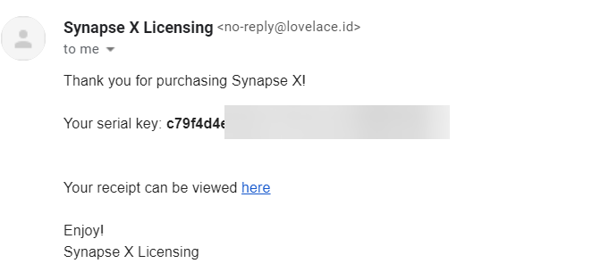
We now want to download the Synapse X client. You can download it by going to https://x.synapse.to/ and downloading & extracting the zip file from there. We will now whitelist the folder from anti-virus detections, which could cause issues later on if we do not do so.
Proceed to whitelisting from anti-virus software.
Whitelisting from Anti-Virus Software
Unfortunately, anti-virus software has always been a problem for Synapse X to the nature of how it works - Synapse X uses techniques that are also commonly used by malicious programs, which causes false positives in anti-virus software.
We will be showing you how to whitelist Synapse X's folder in Windows Defender, which is the most commonly found anti-virus on Windows machines. If you use a different anti-virus (Norton, Malwarebytes, etc.) whitelist the Synapse X folder then proceed to the creating your Synapse X account step. If not though, follow the instructions below.
First, go to the 'Windows Security' app from the start menu.
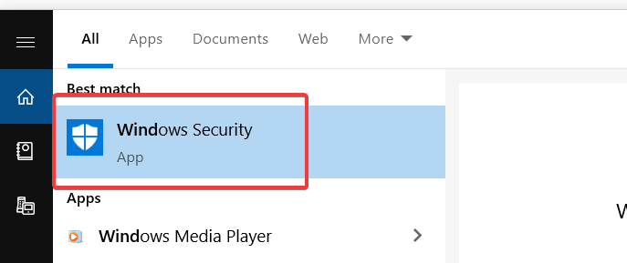
Next, go to the 'Virus & threat protection' tab.
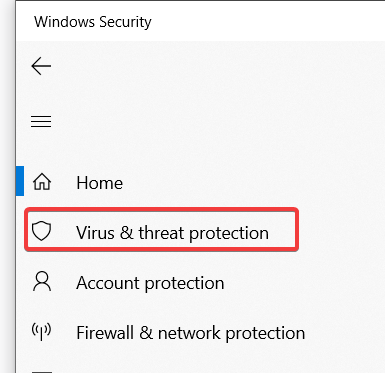
Click on 'Manage settings'.
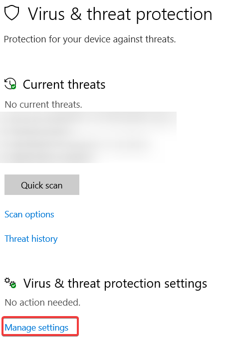
Now, scroll down to 'Add or remove exclusions'.
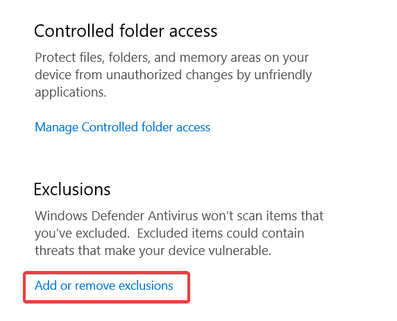
Finally, click 'Add an exclusion', 'Folder', and select the directory that we extracted from the zip file earlier.
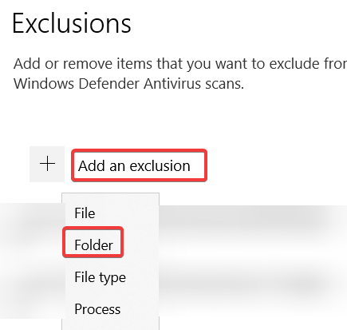
You have now successfully whitelisted the Synapse X folder from Windows Defender. We can now move on to actually installing Synapse X.
Creating a Synapse X Account
To start, we can now open 'Synapse X.exe' and accept the prompt to install Synapse X in this directory.
After the initial loading phase, you should now see a login screen. We do not have an account yet, so click on 'Register'.
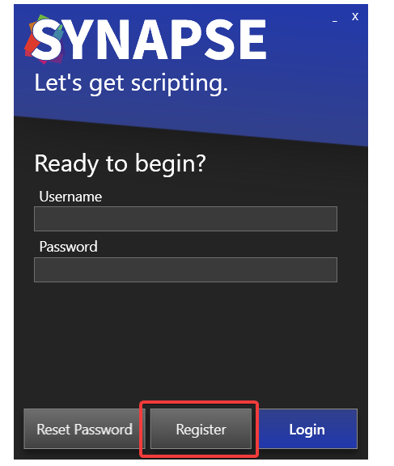
We can now fill in our registration information - email address, username, password, and the serial key that you got in your purchase email.
IMPORTANT: Make sure you enter a real email address for the email field! Do not use temporary mail services, as the only way to recover your Synapse X account in case you lose it is via the email you initially entered.
After you verified all the information you entered is correct, click on 'Register'. It might take a few seconds to register your account - a success screen should appear if you did all the previous steps correctly.
Installation of Synapse X after this point may take a few minutes depending on your internet speed, as Synapse X has to download files required for its execution.
If everything went well, you can move on to general usage. If not, read the troubleshooting section below.
Troubleshooting
If you get an error when you click register, it usually is because you either already have an account registered (in that case, just login with the account you already made), or you have an invalid serial key. Make sure you buy a Synapse X key from official sources (https://x.synapse.to) to prevent the latter from occurring.
If you get a stuck grey screen after Synapse X gets to 'Ready', install the following update files below & the issue should fix itself:
A variety of other issues have fixes on the FAQ document.
General Usage
This section will cover general usage of Synapse X - outlining specific features you can use within the Synapse X user interface & options you can enable or disable.
First, lets check out the layout of the Synapse X user interface.
Synapse X User Interface
The Synapse X user interface was designed to be easy to use, but have powerful features to make your experience better. The picture below shows the main user interface and its features.
Execution Tab
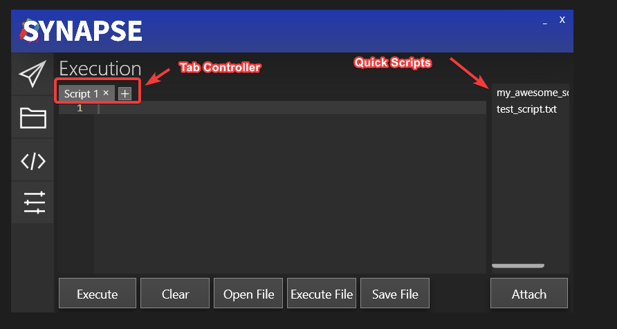
The Tab Controller allows you to have multiple scripts open at once within the Synapse X UI. It also has some useful features - if you open a file (with either the Open File button or Ctrl+O) & then edit the file in the editor, a star will appear to show you that you have modified the file from its original contents.
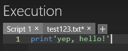
You can then press Ctrl+S to save the file back to disk.
Synapse X also has the feature of 'Quick Scripts' - you can place any script into the scripts folder within your Synapse X installation and it will automatically appear within the UI. You can then right click to either execute the script or load it into the editor.
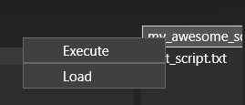
There is also the autoexec folder, which will automatically be executed whenever you attach Synapse X or are teleported while attached. This is useful for custom global functions & other scripts you always want to be executed when you attach.
Options Tab
The options tab allows you to configure a multitude of settings for Synapse X, which will be explained in the next page.
Synapse X Options
The options tab allows you to set a variety of settings in Synapse X, which allow for certain special features or protections.
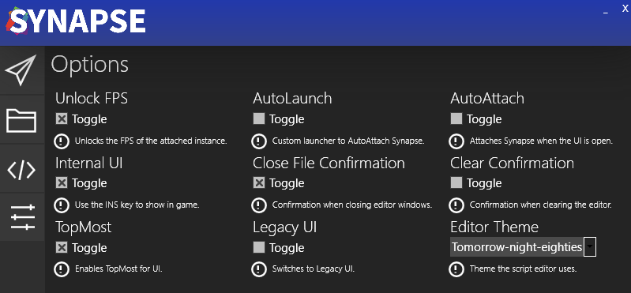
Unlock FPS
The Unlock FPS option will unlock the FPS of the client from 60 to your monitors refresh rate. This is extremely useful on 120/144/240hz monitors which easily could support higher framerates, and makes the game look much more clean.
AutoLaunch/AutoAttach
AutoLaunch and AutoAttach are two separate options that serve similar purposes - they automate the attaching process for you.
AutoAttach will simply attach Synapse X whenever you have the UI open. This is more simple & sometimes works better on certain machines, but the AutoLaunch option has massive benefits over the AutoAttach option which will be shown below.
AutoLaunch does something different - instead of attaching Synapse X whenever you have the UI open, it will actually replace the launcher with a custom one made by Synapse X.
Internal UI
Internal UI allows a pretty neat feature - an internal user interface within the game itself. You can simply press the INSERT key on your keyboard when this is activated in order to pop up the UI. If you use this feature, the AutoLaunch option will allow you to not open the regular UI and simply use the internal one if you like.
Close File/Clear Confirmation
These are two simple but useful options which protect against accidental clearing/closing of scripts in your tab controller. Synapse X will prompt you before doing those actions if enabled.
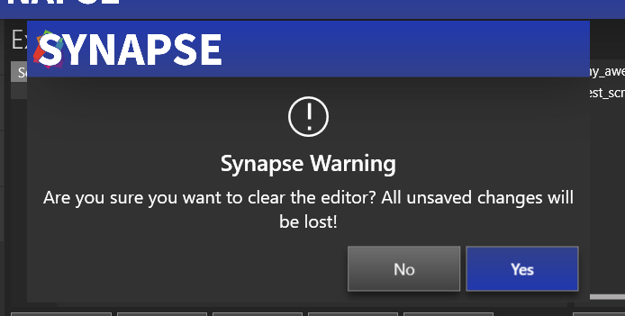
Legacy UI
Some users prefer an older UI style that allows for greater theming & customization, and allows resizing of the window.
Editor Theme
This allows you to customize the theme used in the script editor. Pick one that suits you.
Conclusion
This concludes the general user guide for Synapse X. If you want to develop your own scripts, go to the development introduction. If not, we hope you enjoy Synapse X and all the features it has to offer!
Developing for Synapse X
We will now be showing how you can make your own scripts for Synapse X. Please note the following things though before we begin:
- This development guide assumes you already have knowledge of the Lua programming language. If this is your first time scripting in Lua, we suggest reading the Lua 5.1 manual before this.
- We will be covering some very advanced topics here in this guide. We will try to explain these in the simplest terms possible, but some cannot be explained without full detail.
Lets now start off with the script environment.
Introduction to the Script Environment
We will first learn about certain changes from normal Lua that Synapse X has and how it can affect your scripts.
Script Identity
Normal game scripts run at identity 2 - we can see this if we run printidentity() in a LocalScript.
On the other hand, Synapse X scripts run at identity 7, which allows vastly more access than a normal identity 2 script. Some examples of extended access include:
- Access to
game:GetService("CoreGui"), a safe place to put user interfaces that is hard to detect by game scripts. - Access to restricted functions (
game:HttpGet,game:GetObjects, etc.) that allow for extended functionality that is not possible on normal game scripts. - Access to supervise other scripts - this will be very important later on in the guide.
Synapse X also has a large set of API functions that allow you even more access & convenience. We will be extensively using them later on when we start to create scripts.
The script global
Normally, LocalScripts are given a script global that allows access to children of the script/other properties. While Synapse X scripts are given a script global, its mostly fake - doing script.Disabled = true will not do anything for example on Synapse X.
Its highly recommended you never touch the script global on Synapse X as it can cause various security problems with your scripts.
shared/_G
When Synapse X is attached, it will create a new shared/_G table instead of using the one already defined for other scripts. If you want to get the original shared/_G, use the getrenv function and index shared/_G from there. Please be careful doing this though, as a clever game script developer could set 'traps' with metatables to foil this. We will explain how to bypass these checks later on in this guide.
Lets now move onto objects and metatables.
Objects and Metatables
When you create an instance with Instance.new, internally it creates an 'Object'. Every instance in the game is an object - game, workspace, game:GetService("ReplicatedStorage"), or any other instance is an object. There is a cool thing with all of these objects though - they all have the same metatable.
You may be asking - what is a metatable? Fear not, as we will now be diving deep into how metatables work and why they are so important for development with Synapse X.
Metatables
Metatables serve an extremely important purpose in both Lua and Synapse X - they allow for logic to be put behind regular tables, allowing for powerful programming constructs that are extensively used throughout the game engine.
But for Synapse X, they allow something even more powerful - lets look at an example script and explain the process of how it executes:
print(game:GetService("Players").LocalPlayer.Character)
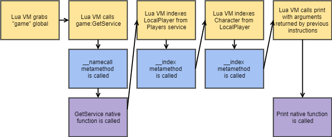
We will take a particular look at the blocks highlighted in blue - those are metamethod calls, and Synapse X has a special feature for metamethod calls - we can hook them.
Metamethod Hooking
Metamethods are a particular feature of metatables which allow Lua functions to be called when someone tries to do certain operations with our metatable. We will be using that fact to replace the function used for the object metatable.
Simple metamethod hook
The following script is the base script used for metamethod hooking on Synapse X. We will explain this script line by line.
local OldIndex = nil
local OldNameCall = nil
OldIndex = hookmetamethod(game, "__index", newcclosure(function(...)
local Self, Key = ...
return OldIndex(...)
end))
OldNameCall = hookmetamethod(game, "__namecall", newcclosure(function(...)
local Self = ...
local NamecallMethod = getnamecallmethod()
return OldNameCall(...)
end))
local OldIndex = nil
local OldNameCall = nil
This declares the original functions we will call later.
OldIndex = hookmetamethod(game, "__index", newcclosure(function(...)
local Self, Key = ...
return OldIndex(...)
end))
This has three parts - the hookmetamethod call, the newcclosure call, and the actual hook itself. This hooks the __index metamethod, which is called whenever someone indexes a object. (game.Workspace for example)
Its also really important to declare these functions as vararg and pass their arguments as such, or detection methods can arise.
OldNameCall = hookmetamethod(game, "__namecall", newcclosure(function(...)
local Self = ...
local NamecallMethod = getnamecallmethod()
return OldNameCall(...)
end))
This is the same as the above hook, but will replace __namecall, which is used for calls with self. (game:GetService("Workspace") for example)
The getnamecallmethod call is needed so we can get the function name which we will use later in this tutorial. (in the above case, NamecallMethod would be GetService)
We will now be taking a detour to explain how newcclosure works, which is important to understand for later parts of this tutorial.
Importance of Newcclosure
Newcclosure is a very important function in Synapse X, which we will be explaining to make sure you use it correctly.
You may be asking, "why is newcclosure so important?", and there is a simple answer - not using newcclosure opens you up to a multitude of detection vectors.
Detecting metatable hooks
Smart game script developers back at the time when metamethod hooks were first starting to be popular had a good idea of how to detect them - check the call-stack for suspicious environments that indicate metamethod hooks are present.
The general way to do this was via the xpcall function and forcing an error within the original function that was called by the hook. An example of this technique is described below:
local Env = getfenv()
xpcall(function()
return game:_____()
end, function()
for i = 0, 10 do
if getfenv(i) ~= Env then
warn("Detected metamethod tampering!")
end
end
end)
newcclosure will make sure that Synapse X functions are not on the xpcall call-stack, protecting you from this attack.
There was also the method of checking error messages for changes - this was also popularly used back at the start of popularity for metatable hooks.
local OldErr, OldMsg = pcall(function() return game:____() end)
while wait(1) do
local Err, Msg = pcall(function() return game:____() end)
if OldErr ~= Err or OldMsg ~= Msg then
warn("Detected metamethod tampering!")
end
end
newcclosure will make sure this attack does not happen either.
In short, always use newcclosure for both metamethod hooks and function hooks, which we will now to go back to.
For now, lets go back to metamethod hook examples.
Metamethod Hook Examples
Lets now expand on the example script that we were shown in 3.2 and add some actual functionality for it.
local LocalPlayer = game:GetService("Players").LocalPlayer
local OldIndex = nil
OldIndex = hookmetamethod(game, "__index", function(Self, Key)
if not checkcaller() and Self == LocalPlayer and Key == "Character" then
return nil
end
return OldIndex(Self, Key)
end)
Let us now explain the new lines we added.
local LocalPlayer = game:GetService("Players").LocalPlayer
This will grab the LocalPlayer for later on in the script.
if not checkcaller() and Self == LocalPlayer and Key == "Character" then
return nil
end
This line has a few checks, but most importantly a call to checkcaller. checkcaller allows you to see if the thread calling your hook is a Synapse X thread or not, and modify its behavior based on that. This is really important for many hooks, as most of the time you do not want a hook to be executed if on a Synapse X thread.
If that check passes (not a Synapse X thread), we then check if they were trying to index a LocalPlayer with the field Character, then return nil.
Lets now try that script that we previously explained on the metatables page:
print(game:GetService("Players").LocalPlayer.Character)
If we execute it within a game LocalScript, we get the result we wished:
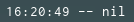
Voila! We have successfully intercepted a metamethod index and replaced it with our own values. The possibilities that we can do with this now are near limitless.
__namecall Hook Examples
Lets now do a hook for the __namecall method, based on the same script as before.
local ReplicatedStorage = game:GetService("ReplicatedStorage")
local OldNameCall = nil
OldNameCall = hookmetamethod(game, "__namecall", function(Self, ...)
local Args = {...}
local NamecallMethod = getnamecallmethod()
if not checkcaller() and Self == game and NamecallMethod == "GetService" and Args[1] == "Workspace" then
return ReplicatedStorage
end
return OldNameCall(Self, ...)
end)
Let us now explain the new lines we added.
local ReplicatedStorage = game:GetService("ReplicatedStorage")
This will grab the ReplicatedStorage service for later on in the script.
local Args = {...}
This will get a list of arguments to the function called.
if not checkcaller() and Self == game and NamecallMethod == "GetService" and Args[1] == "Workspace" then
return ReplicatedStorage
end
The same checkcaller check applies here, but we have a few more checks within this conditional:
- The
Self == gamecheck will make sure the object passed isgame(this prevents someone from doingworkspace:GetService("Workspace")and getting the hooked result) - The
NamecallMethod == "GetService"check will make sure the function being called isGetService. - The
Args[1] == "Workspace"check will make sure the first argument passed isWorkspace.
If all of those conditions pass, we return ReplicatedStorage instead of Workspace.
Lets run an example script to show this
print(game:GetService("Workspace"))
If we execute it within a game LocalScript, we get the result we wanted again:
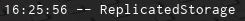
Lets now move on to function hooking.
Function Hooks
While metamethod hooks may be very useful, there is also situations where we want to directly hook functions as well. An example of this might be FireServer, where some game scripts cache the result from __index at boot to prevent metamethod hooks from working.
The old method to bypass this was to have your script run very early (i.e before the game loads), but now we have better methods to allow this.
Lets show an example of function hooking and explain each line.
local OldFireServer
OldFireServer = hookfunction(Instance.new'RemoteEvent'.FireServer, newcclosure(function(Event, ...)
return OldFireServer(Event, ...)
end))
local OldFireServer
This will declare a local that will be used to store the original FireServer function. You need to declare this a line before your hookfunction call as this local will become an upvalue in the resulting hook.
OldFireServer = hookfunction(Instance.new'RemoteEvent'.FireServer, newcclosure(function(Event, ...)
return OldFireServer(Event, ...)
end))
This will actually hook the FireServer function with the function returned from newcclosure, and set the original function into the OldFireServer variable.
Note: hookfunction will automatically convert the hook you pass into newcclosure'd form, meaning it isn't required for you to call newcclosure. It is still good form to do so, though.
Important Note: Never call hookfunction with a metamethod, as it can cause instability issues. Always use the technique shown in metamethod hooks instead.
Function Hooking Examples
Lets expand our FireServer hook to act as a RemoteEvent logger:
local OldFireServer
OldFireServer = hookfunction(Instance.new'RemoteEvent'.FireServer, newcclosure(function(Event, ...)
if not checkcaller() then
local Args = {...}
print(Event)
for I, V in pairs(Args) do
print(V)
end
end
return OldFireServer(Event, ...)
end))
This will now print out the event who called FireServer and the arguments passed to it whenever it is called.
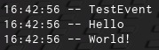
Lets now show how to use the Synapse X Decompiler.
Using the Decompiler
Synapse X includes another powerful tool to help you develop scripts - the decompiler. The decompiler allows you to see the full Lua source code of any game LocalScript or ModuleScript, allowing you to easily understand how a game works.
To start, you can execute the Script Dumper from the Synapse X Script Hub. After that, it may take 5-10 minutes for all scripts on the game to decompiled, which will then be placed in your Synapse X workspace folder. You can then open up the file and take a look at all game scripts.
An example of a decompiled script is shown below:
-- Decompiled with the Synapse X Luau decompiler.
function CreateGui()
local v1 = Instance.new("ScreenGui");
local v2 = Instance.new("Frame");
local v3 = Instance.new("Frame");
local v4 = Instance.new("TextLabel");
local v5 = Instance.new("TextBox");
local v6 = Instance.new("Frame");
local v7 = Instance.new("Frame");
local v8 = Instance.new("TextButton");
local v9 = Instance.new("TextLabel");
local v10 = Instance.new("TextLabel");
local v11 = Instance.new("ImageLabel");
local v12 = Instance.new("Frame");
local v13 = Instance.new("Frame");
You may notice that decompiled output looks a lot different from the original source of that script - this is because of debugging information being irrevocably lost during the compilation process. Synapse does its best to make the decompiled source look as good as possible, but unfortunately decompilation is mostly a guessing game, which will inevitably lead to differences in the decompiled output.
If you find specific issues within the decompiler, we would recommend you report them via our Bug Report category on our support site.
Nonetheless, the decompiler is a powerful tool in your arsenal, which we will put to use in our next section, using the debug API.
Using the Debug API
We still haven't covered one of the most important APIs within Synapse - the debug API. The debug API allows full control over the execution state of any running script, which we will now explain how to use.
debug.*upvalue(s)
We will first be explaining the most simple (but arguably the most used) function within the debug API - the upvalue functions.
You might be asking, what is a upvalue? An upvalue is a local variable that is used in more than 1 function. See an example below of an upvalue:
local TestVariable = "Hello, world!"
local function Test()
print(TestVariable)
TestVariable = "Still - Hello, world!"
print(TestVariable)
end
Test()
The TestVariable is an upvalue within the Test function. We can grab and modify that variable with the debug.setupvalue function.
An example of this is shown below:
local TestVariable = "Hello, world!"
local function Test()
print(TestVariable)
TestVariable = "Still - Hello, world!"
print(TestVariable)
end
debug.setupvalue(Test, 1, "Hello, modified world!")
Test()
Instead of printing "Hello, world!" followed by "Still - Hello, world!" as it normally would, it instead prints Hello, modified world! first!
Call-stack Levels
You can also call the full set of debug functions with a function level instead of the function itself, just like getfenv/setfenv.
local TestVariable = "Hello, world!"
local function Test()
local function InnerFunction()
--2 refers to the Test function
debug.setupvalue(2, 1, "Hello, modified world!")
end
InnerFunction()
print(TestVariable)
TestVariable = "Still - Hello, world!"
print(TestVariable)
end
Test()
This will produce the same results as the above script.
debug.*constants
We will next be explaining the constant functions, which can be used to get/modify the constant values within a script.
An example is provided below:
local TestVariable = "Hello, world!"
local function Test()
print(TestVariable)
TestVariable = "Still - Hello, world!"
print(TestVariable)
end
debug.setconstant(Test, 2, "Modified - Hello, world!")
Test()
This will print out "Hello, world!" proceeded by "Modified - Hello world!" instead of "Still - Hello, world!".
Note: Certain low number values (0-65535) may not show up in the constant functions. We plan to add support for them later.
debug.*stack
The debug API also has one other set of functions - the stack functions.
The stack functions allow you to modify any value on the stack of any function currently running that has called you. This is mostly used to modify local variables that are not upvalues. Please note this only supports call-stack levels unlike the rest of the functions.
An example is shown below:
local function Test()
local TestVariable = "Hello, world!"
local function InnerFunction()
--2 refers to the Test function
debug.setstack(2, 1, "Hello, modified world!")
end
InnerFunction()
print(TestVariable)
TestVariable = "Still - Hello, world!"
print(TestVariable)
end
Test()
This will also produce the same results as the upvalue testing script.
Miscellaneous debug functions
The debug API also contains some other useful functions:
debug.validlevel - This will allow you to check if a call-stack level actually exists or not. Makes you not need to do pcall for debug functions with stack levels.
debug.getregistry - This allows you to get the Lua registry, which can be used to get connections in memory and other information.
Lets now move on to calling external functions.
Filesystem API
Synapse X contains functions that allow you to create, append, and remove files and folders within the Synapse X workspace directory. This allows you to save settings and any other information you may want later.
Creating Files
You can create files with the writefile function.
writefile("test.txt", "Testing!")
This will write a file named test.txt with the contents Testing! in your Synapse X workspace folder.
Appending Files
You can use appendfile, which has the same arguments as the writefile function, but does not overwrite the file.
appendfile("test.txt", "Testing!")
Reading Files
You can use the readfile function, which reads a file if it exists, erroring if it does not.
local contents = readfile("test.txt")
There is also a variation if you want to load it as a script - use loadfile in that case.
Checking if a file exists
You can use the isfile function, which returns true if you specified a valid file.
local valid = isfile("test.txt")
Folders
The same interface exists for folders as well - makefolder, delfolder, isfolder.
Lets conclude this tutorial series with the web APIs.
Web APIs
Synapse X contains an API that allow you to easily make REST requests - syn.request.
You pass a table containing REST request properties to the function:
Url- The Url for the request.Method- This is the REST request method. (GET,POST, etc)Headers- This is a table of HTTP headers to be passed to the request.Cookies- This is a table of HTTP cookies to be passed to the request.Body- This can be used withinPOSTor other similar request types as a payload body.
The function will yield while the request is being preformed, and will return the following table:
Success- If the request was successful or not.StatusCode- The HTTP status code of the request.StatusMessage- The HTTP status code converted to string form.Headers- The response headers of the request.Cookies- The response cookies of the request.Body- The response body of the request.
Synapse X also will add a few headers to any syn.request call:
- The
User-Agentheader by default will besynx/current-version. (current-versionwill be the current version of Synapse X.) - A
Syn-Fingerprintheader will be added which allows you to uniquely identify Synapse X users.
An example of syn.request is shown below:
local Response = syn.request({
Url = "https://example.com",
Method = "GET"
})
print(Response.Body)
The HTML for https://example.com will be printed out.
Conclusion
This concludes the Synapse X development tutorial. If you have any suggestions for topics to be included within the tutorial, please reach out to us! The next section will be a reference for all Synapse X API functions.
API Reference
This section contains documentation for every Synapse X custom function, examples of how to use them, and notes for using the functions.
Please note some generic type information before going into the documentation:
union<T, X> refers to functions that can return more then 1 type for that specific argument/return value.
? refers to optional parameters. Example: <bool?>
<void> refers to functions with no return results (as in other languages)
variant refers to parameters/return values that could be any type.
... refers to variable amounts of parameters/return values.
Jump to environment functions.
Environment Functions
Get Global Environment
<table> getgenv(<void>)
Returns the environment that will be applied to each script ran by Synapse.
Get Environment
<table> getrenv(<void>)
Returns the global environment for the LocalScript state.
Get Registry
<table> getreg(<void>)
Returns the Lua registry.
Get Garbage Collection
<table> getgc(<bool?> include_tables)
Returns all functions and userdata values within the GC. Passing true will also return tables.
Get Instances
<table<Instance>> getinstances(<void>)
Returns a list of all instances within the game.
Get Nil Instances
<table<Instance>> getnilinstances(<void>)
Returns a list of all instances parented to nil within the game.
Get Scripts
<table<union<LocalScript, ModuleScript>>> getscripts(<void>)
Returns a list of all scripts within the game.
Get Loaded Modules
<table<ModuleScript>> getloadedmodules(<void>)
Returns all ModuleScripts loaded in the game.
Get Connections
<table<Connection>> getconnections(<ScriptSignal> obj)
Gets a list of connections to the specified signal. You can do the following operations on a Connection:
| Example | Description |
|---|---|
|
|
The function connected to the connection |
|
|
The state of the connection |
|
|
Enables the connection |
|
|
Disables the connection |
|
|
Fires the connection |
Example
for i, connection in pairs(getconnections(workspace.ChildAdded)) do
connection:Disable()
end
Fire Signal
<void> firesignal(<ScriptSignal> Signal, <variant> Args...)
Fires all the connections connected to the signal Signal with Args.
Fire Click Detector
<void> fireclickdetector(<ClickDetector> Detector, <number> Distance)
Fires the designated ClickDetector with provided Distance. If Distance isn't provided, it will default to 0.
Fire Proximity Prompt
<void> fireproximityprompt(<ProximityPrompt> Prompt, <number> Distance)
Fires the designated ProximityPrompt.
Fire Touch Interest
<void> firetouchinterest(<Instance> Part, <BasePart> ToTouch, <uint> Toggle)
Fakes a .Touched event to ToTouch with Part. The Toggle argument must be either 0 or 1 (for fire/un-fire).
Note: The ToTouch argument must have a child with class TouchTransmitter in order for this function to work.
Is Network Owner
<bool> isnetworkowner(<BasePart> Part)
Returns true if the Part is owned by the player.
Get Hidden Property
<variant> gethiddenproperty(<Instance> Object, <string> Property)
Returns the hidden property Property from Object. Errors if the property does not exist.
Set Hidden Property
<void> sethiddenproperty(<Instance> Object, <string> Property, <variant> Value)
Sets the hidden property Property with Value from Object. Errors if the property does not exist.
Set Simulation Radius
<void> setsimulationradius(<uint> SimulationRadius, <uint?> MaxSimulationRadius)
Sets the player's SimulationRadius. If MaxSimulationRadius is specified, it will set that as well.
Script Functions
Get Script Environment
<table> getsenv(union<LocalScript, ModuleScript> Script)
Returns the environment of Script. Errors if the script is not loaded in memory.
Get Calling Script
<union<LocalScript, ModuleScript, nil>> getcallingscript(<void>)
Gets the script that is calling this function.
Get Script Closure
<function> getscriptclosure(union<LocalScript, ModuleScript> Script)
Gets a bare function from the script passed. Please note this is not the original function of the script and will not have upvalues/enviornment correctly defined.
Get Script Hash
<string> getscripthash(union<LocalScript, ModuleScript> Script)
Returns a SHA384 hash of the scripts bytecode. You can use this to detect changes of a script.
Table Functions
Get Raw Metatable
<table> getrawmetatable(<table> value)
Retrieve the metatable of value irregardless of value's metatable's __metatable field. Returns nil if it doesn't exist.
Set Raw Metatable
<bool> setrawmetatable(<object> o, <table> mt)
Sets o's metatable to mt even if the __metatable field exists in o's metatable.
Set Readonly
<void> setreadonly(<table> t, <bool> val)
Sets t's read-only value to val.
Is Readonly
<bool> isreadonly(<table> t)
Returns t's read-only condition.
Input Functions
Is Active
<bool> iswindowactive(<void>)
Returns if the main window is in focus. This must return true for any other mouse/keyboard function to work.
Keyboard
<void> keypress(<uint> keycode)
Simulates a key press for the specified keycode. Keycodes are listed here.
<void> keyrelease(<uint> key)
Releases key on the keyboard. You can access the key values from the link above.
Left Click
<void> mouse1click(<void>)
Simulates a full left mouse button press.
<void> mouse1press(<void>)
Simulates a left mouse button press without releasing it.
<void> mouse1release(<void>)
Simulates a left mouse button release.
Right Click
<void> mouse2click(<void>)
Simulates a full right mouse button press.
<void> mouse2press(<void>)
Clicks down on the right mouse button.
<void> mouse2release(<void>)
Simulates a right mouse button release.
Mouse Movement
<void> mousescroll(<number> px)
Scrolls the mouse wheel virtually by px pixels.
<void> mousemoverel(<number> x, <number> y)
Moves the mouse cursor relatively to the current mouse position by coordinates x and y.
<void> mousemoveabs(<number> x, <number> y)
Move's your mouse to the x and y coordinates in pixels from topleft of the main window.
Hooking Functions
Hook Function
<function> hookfunction(<function> old, <function> hook)
Hooks function old, replacing it with the function hook. The old function is returned, you must use this function in order to call the original function.
Hook Metamethod
<function> hookmetamethod(<Object> object, <string> metamethod, <function> hook)
Hooks the metamethod passed in the object's metatable with hook. A function to call the original metamethod is returned, you must use this function in order to call the original metamethod.
This function will error if an object without a metatable is passed or a invalid metamethod is passed.
New C Closure
<function> newcclosure(<function> f)
Pushes a new CClosure that invokes function f upon call.
Reflection Functions
Loadstring
<union<function, nil>, <string?>> loadstring(<string> chunk, <string?> chunk_name)
Loads chunk as a Lua function with optional chunk_name and returns it if compilation is successful. Otherwise, if an error has occurred during compilation, nil followed by the error message will be returned.
Check Caller
<bool> checkcaller(<void>)
Returns true if the current thread is a Synapse thread.
Note: Checkcaller does NOT check the call stack of the function, if you call a game function then it calls out to checkcaller, the result will be true! Be careful.
Is Lua Closure
<bool> islclosure(<function> f)
Returns true if f is an LClosure.
Dump String
<string> dumpstring(<string> Script)
Returns the Synapse formatted bytecode for source string script.
Decompile
<string> decompile(union<LocalScript, ModuleScript, function, string, proto> Script, union?<string, bool> mode, <number?> timeout)
Decompiles Script and returns the decompiled script with timeout. If the decompilation fails, then the return value will be an error message.
Note: The mode parameter is deprecated and is not used in newer versions of Synapse.
Console Functions
Console Print
<void> rconsoleprint(<string> message)
Prints message into the console. rconsoleprint also supports colors.
Example
rconsoleprint('@@RED@@')
rconsoleprint('this is red')
Console Output
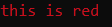
Colors
| Color | Code |
|---|---|
| Black | @@BLACK@@ |
| Blue | @@BLUE@@ |
| Green | @@GREEN@@ |
| Cyan | @@CYAN@@ |
| Red | @@RED@@ |
| Magenta | @@MAGENTA@@ |
| Brown | @@BROWN@@ |
| Light Gray | @@LIGHT_GRAY@@ |
| Dark Gray | @@DARK_GRAY@@ |
| Light Blue | @@LIGHT_BLUE@@ |
| Light Green | @@LIGHT_GREEN@@ |
| Light Cyan | @@LIGHT_CYAN@@ |
| Light Red | @@LIGHT_RED@@ |
| Light Magenta | @@LIGHT_MAGENTA@@ |
| Yellow | @@YELLOW@@ |
| White | @@WHITE@@ |
Console Info
<void> rconsoleinfo(<string> message)
Prints message into the console, with a info text before it.
Console Warn
<void> rconsolewarn(<string> message)
Prints message into the console, with a warning text before it.
Console Error
<void> rconsoleerr(<string> message)
Prints message into the console, with a error text before it.
Console Clear
<void> rconsoleclear(<void>)
Clears the console.
Console Name
<void> rconsolename(<string> title)
Sets the currently allocated console title to title.
Console Input
<string> rconsoleinput(<void>)
Yields until the user inputs information into their console. Returns the input they put in.
Print Console
<void> printconsole(<string> message, <byte> red, <byte> green, <byte> blue)
Prints message into the internal and integrated console with RGB value. To view the internal console, enable Internal UI in the Options menu and when in-game press INSERT on your keyboard. The integrated console can be found in the new synapse UI.
Filesystem Functions
Read File
<string> readfile(<string> path)
Reads the contents of the file located at path and returns it. If the file does not exist, it errors.
Write File
<void> writefile(<string> path, <string> contents)
Writes contents to the supplied path.
Extensions that are not allowed: .exe, .scr, .bat, .com, .csh, .msi, .vb, .vbs, .vbe, .ws, .wsf, .wsh, .ps1, .psy. Attempting to call this function with those extensions will error.
Append File
<void> appendfile(<string> path, <string> content)
Appends content to the file contents at path. If the file does not exist, it errors.
Load File
<union<function, nil>, <string?>> loadfile(<string> path)
Loads in the contents of a file as a chunk and returns it if compilation is successful. Otherwise, if an error has occurred during compilation, nil followed by the error message will be returned.
List Files
<table> listfiles(<string> folder)
Returns a table of files in folder.
Is File
<bool> isfile(<string> path)
Returns if path is a file or not.
Is Folder
<bool> isfolder(<string> path)
Returns if path is a folder or not.
Make Folder
<void> makefolder(<string> path)
Creates a new folder at path.
Delete Folder
<void> delfolder(<string> path)
Deletes the folder in the supplied path, if no folder exists, it errors.
Delete File
<void> delfile(<string> path)
Deletes the file in the supplied path, if no file exists, it errors.
Miscellaneous Functions
Set Clipboard
<void> setclipboard(<string> value)
Sets value to the clipboard.
Set Fast Flag
<void> setfflag(<string> FFlag, <string> Value)
Sets FFlag with Value. Must be run before the game loads, auto execute + auto launch recommended.
Get Namecall Method
<string> getnamecallmethod(<void>)
Returns the namecall method if the function is called in an __namecall metatable hook.
Set Namecall Method
<void> setnamecallmethod(<string> method)
Sets the current namecall method to the new namecall method. Must be called in a __namecall metatable hook.
Get Synapse Asset
<Content> getsynasset(<string> path)
Returns a Content string that can be used as a fake Asset ID for GUI elements. Please note this will only affect your client.
Note: Certain instances only work with specific file types. For example, VideoFrame's only work with .webm encoded videos.
Get Special Info
<table> getspecialinfo(<Instance> obj)
Gets a list of special properties for MeshParts, UnionOperations, and Terrain instances.
| MeshParts | UnionOperations | Terrain |
|---|---|---|
| PhysicsData | AssetId | SmoothGrid |
| InitialSize | ChildData | MaterialColors |
| FormFactor | ||
| InitialSize | ||
| MeshData | ||
| PhysicsData |
Save Instance
<void> saveinstance(<table> t)
Saves the current game into your workspace folder. You can use table t to customize options for this.
| Option | Value |
|---|---|
| mode | optimized / full / scripts |
| noscripts | true / false |
| scriptcache | true / false |
| timeout | any number |
Message Box
<uint> messagebox(<string> text, <string> caption, <uint> flags)
Creates a message box with parameters text, caption and style.
| Style | Number |
|---|---|
| OK | 0 |
| OK / Cancel | 1 |
| Abort / Retry / Ignore | 2 |
| Yes / No / Cancel | 3 |
| Yes / No | 4 |
| Retry / Cancel | 5 |
| Cancel / Try Again / Continue | 6 |
| Code | Description |
|---|---|
| 1 | The OK button was selected |
| 2 | The Cancel button was selected. |
| 3 | The Abort button was selected. |
| 4 | The Retry button was selected. |
| 5 | The Ignore button was selected. |
| 6 | The Yes button was selected. |
| 7 | The No button was selected. |
| 10 | The Try Again button was selected. |
| 11 | The Continue button was selected. |
Libraries
We will now list the libraries within Synapse.
Jump to the bit library.
Bit Library
bdiv
<int> bit.bdiv(<uint> dividend, <uint> divisor)
Divides dividend by divisor, remainder is not returned.
badd
<int> bit.badd(<uint> a, <uint> b)
Adds a with b, allows overflows.
bsub
<int> bit.bsub(<uint> a, <uint> b)
Subtracts a with b, allows overflows.
bmul
<int> bit.bmul(<uint> val, <uint> by)
Multiplies val using by, allows overflows.
Note: All bitwise functions within the bit lib return signed 32 bit integers. Take good note of that when implementing. If you want unsigned results, we suggest using bit32.
band
<int> bit.band(<uint> val, <uint> by)
Does a bitwise AND (&) on val using by.
bor
<int> bit.bor(<uint> val, <uint> by)
Does a bitwise OR (|) on val using by.
bxor
<int> bit.bxor(<uint> val, <uint> by)
Does a bitwise XOR (⊕) on val using by.
bnot
<int> bit.bnot(<uint> val)
Does a bitwise NOT on val.
bswap
<int> bit.bswap(<uint> val)
Does a bitwise swap on val.
ror
<int> bit.rol(<int> value, <int> rotate_count)
Returns the value rotated right by rotate_count.
rol
<int> bit.rol(<int> value, <int> rotate_count)
Returns the value rotated left by rotate_count.
tohex
<string> bit.tohex(<uint> val)
Converts val to a hex string.
tobit
<int> bit.tobit(<uint> val)
Converts val into proper form for bitwise operations.
lshift
<int> bit.lshift(<uint> val, <uint> by)
Does a left shift on val using by.
rshift
<int> bit.rshift(<uint> val, <uint> by)
Does a right shift on val using by.
arshift
<int> bit.arshift(<int> value, <int> shift_count)
Returns the arithmetically shifted value.
Crypt Library
Encrypt
<string> syn.crypt.encrypt(<string> data, <string> key)
Encrypts data with key (algorithm used is AES-GCM, random nonce generated per call).
Decrypt
<string> syn.crypt.decrypt(<string> data, <string> key)
Decrypts data with key.
Base64 Encode
<string> syn.crypt.base64.encode(<string> data)
Encodes data with base64.
Base64 Decode
<string> syn.crypt.base64.decode(<string> data)
Decodes data with base64.
Hash
<string> syn.crypt.hash(<string> data)
Hashes data with SHA-384.
Derive
<string> syn.crypt.derive(<string> value, <uint> len)
Derives a secret key from value with the length of len.
Random
<string> syn.crypt.random(<uint> size)
Generates a random string with size (cannot be negative or exceed 1024).
Custom
Encrypt
<string> syn.crypt.custom.encrypt(<string> cipher, <string> data, <string> key, <string> iv/nonce)
Encrypts data with key using selected cipher and iv/nonce.
Decrypt
<string> syn.crypt.custom.decrypt(<string> cipher, <string> data, <string> key, <string> iv/nonce)
Decrypts data with key using selected cypher and iv/nonce.
Hash
<string> syn.crypt.custom.hash(<string> algorithm, <string> data)
Hashes data with algorithm.
Encryption/Decryption ciphers
You can use both - and _. With Blowfish bf or blowfish.
| AES | Blowfish |
|---|---|
| aes-cbc | bf-cbc |
| aes-cfb | bf-cfb |
| aes-ctr | bf-ofb |
| aes-ofb | |
| aes-gcm | |
| aes-eax |
Hashing algorithms
Same goes here, you can use - or _.
| MD5 | SHA1 | SHA2 | SHA3 |
|---|---|---|---|
| md5 | sha1 | sha224 | sha3-256 |
| sha256 | sha3-384 | ||
| sha384 | sha3-512 | ||
| sha512 |
Example
local enc = syn.crypt.custom.encrypt(
"aes-gcm",
"hi gamers!",
"$nLliCMdi7gcynsFCK9u0aVNdtkNIiZG",
"Agd13KuKIL2$") -- in production, generate a nonce via syn.crypt.random
print(enc)
print(syn.crypt.custom.decrypt(
"aes-gcm",
enc,
"$nLliCMdi7gcynsFCK9u0aVNdtkNIiZG",
"Agd13KuKIL2$")) --"hi gamers"
Debug Library
Get Constants
<table> debug.getconstants(union<function, number> fi)
Retrieve the constants in function fi or at level fi.
Get Constant
<variant> debug.getconstant(union<function, number> fi, <number> idx)
Returns the constant at index idx in function fi or level fi.
Set Constant
<void> debug.setconstant(union<function, number> fi, union<string, int> idx, union<number, bool, nil, string> value)
Set constant idx to tuple value at level or function fi.
Get Upvalues
<table> debug.getupvalues(union<function, number> fi)
Retrieve the upvalues in function fi or at level fi.
Get Upvalue
<variant> debug.getupvalue(union<function, number> fi, <number> idx)
Returns the upvalue with name idx in function or level fi.
Set Upvalue
<void> debug.setupvalue(<function, number> fi, <number> idx, <table> value)
Set upvalue idx to value value at level or function fi.
Get Protos
<table> debug.getprotos(<function> f)
Returns a table containing the inner functions of function f. Note these functions will not have upvalues, use debug.getproto with activated true to get a list of instances.
Get Proto
union<function, table<function>> debug.getproto(<function, number> f, <int> index, <bool?> activated)
Gets the inner function of f at index.
Note if activated is true, instead it will return a table of functions. These are the instances of that function that exist within the GC.
Set Proto
<void> debug.setproto(<function> fi, <number> index, <function> replacement)
Replaces fi at index with function replacement at level or function fi.
Get Stack
<table> debug.getstack(<number> indice)
Gets the method stack at level indice.
Set Stack
<void> debug.setstack(<number> indice, <number> indice, <table> value)
Set the stack indice at level indice to value value at level or function fi.
Set Metatable
<table> debug.setmetatable(<table> o, <table> mt)
Set the metatable of o to mt.
Get Registry
<table> debug.getregistry(<void>)
Returns the Lua registry.
Get Info
<table> debug.getinfo(union<function, number> fi, <string> w = "flnSu")
Returns a table of info pertaining to the lua function fi.
Drawing Library
Drawing New
<object> Drawing.new(<string> type)
Creates a new drawing object with type. Returns the object.
Fonts
The following fonts are available within the Drawing.Fonts table.
| Font | Number |
|---|---|
| UI | 0 |
| System | 1 |
| Plex | 2 |
| Monospace | 3 |
Base Properties
bool Visible;
int ZIndex;
number Transparency;
Color3 Color;
void Remove();
Notes:
- All other classes derive from this base class.
- Transparency is the opposite than on normal GUI elements - 1 means fully opaque, while 0 means fully transparent.
-
ZIndex's are 32 bit integers - you can only use whole numbers from -2,147,483,647 to 2,147,483,647. All objects by default have a ZIndex of zero.
-
Related to that, the object rendering order goes from the lowest ZIndex to the highest. This means ZIndex's of lower values will render first, and higher will render after.
- In more laymen terms, this means an object with a higher ZIndex will render above one with a lower ZIndex.
- In a single ZIndex, the render order is 'first come first serve' - the oldest objects in the same ZIndex will be rendered first. Switching to a different ZIndex will kick that object back to the end of the rendering order for that ZIndex. Newly allocated objects will also start at the end of the rendering order for that specific ZIndex.
-
Related to that, the object rendering order goes from the lowest ZIndex to the highest. This means ZIndex's of lower values will render first, and higher will render after.
Types:
Line
number Thickness;
Vector2 From;
Vector2 To;
Text
string Text;
number Size;
bool Center;
bool Outline;
Color3 OutlineColor;
Vector2 Position;
readonly<Vector2> TextBounds;
Drawing.Font Font;
Image
writeonly<string> Data;
Vector2 Size;
Vector2 Position;
number Rounding;
Notes:
Datadoes NOT refer to the URL of the image. You must grab the image data yourself (game:HttpGet), then assign that toData.
Circle
number Thickness;
number NumSides;
number Radius;
bool Filled;
Vector2 Position;
Square
number Thickness;
Vector2 Size;
Vector2 Position;
bool Filled;
Quad
number Thickness;
Vector2 PointA;
Vector2 PointB;
Vector2 PointC;
Vector2 PointD;
bool Filled;
Notes:
- The points are in counter-clockwise order - PointA is top-right, PointB is top-left, PointC is bottom-left, PointD is bottom-right.
Triangle
number Thickness;
Vector2 PointA;
Vector2 PointB;
Vector2 PointC;
bool Filled;
Example
local Line = Drawing.new("Line")
Line.Visible = true
Line.From = Vector2.new(0, 0)
Line.To = Vector2.new(200, 200)
Line.Color = Color3.fromRGB(255, 255, 255)
Line.Thickness = 2
Line.Transparency = 1
LIne.ZIndex = 1
wait(5)
Line:Remove() --Drawing objects are manually managed.
Syn Library
Cache Replace
<void> syn.cache_replace(<Instance> obj, <Instance> t_obj)
Replace obj in the instance cache with t_obj.
Cache Invalidate
<void> syn.cache_invalidate(<Instance> obj)
Invalidate obj's cache entry, forcing a re-cache upon the next lookup.
Set Thread Identity
<void> syn.set_thread_identity(<uint> n)
Sets the current thread identity.
Get Thread Identity
<uint> syn.get_thread_identity(<void>)
Returns the current thread identity.
Is Cached
<bool> syn.is_cached(<Instance> obj)
Returns true if obj is currently cached within the registry.
Write Clipboard
<void> syn.write_clipboard(<string> content)
Writes content to the current Windows clipboard.
Queue On Teleport
<void> syn.queue_on_teleport(<string> code)
Executes code after player is teleported.
Example
game:GetService("Players").LocalPlayer.OnTeleport:Connect(function(State)
if State == Enum.TeleportState.Started then
syn.queue_on_teleport("<script to execute after TP>")
end
end)
Protect Gui
<void> syn.protect_gui(<obj> GUI)
Protects your GUI from recursive FindFirstChild-style attacks. After you call the function, recursive FFA calls from non-Synapse contexts will skip over your protected instances & all children of such instances.
Example
local GUI = game:GetObjects("whatever")[1]
syn.protect_gui(GUI) -- You should call protect_gui before your GUI is parented.
GUI.Parent = game:GetService("CoreGui")
Unprotect Gui
<void> syn.unprotect_gui(<Instance> GUI)
Removes protection from the GUI. Errors if gui isn't already protected.
Is Beta
<bool> syn.is_beta(<void>)
Returns a bool indicating whether the user is using Synapse Beta or not.
Crypto
<...> syn.crypto.*
Alias for syn.crypt.*. You can view the functions in the cryptography library section.
Request
<table> syn.request(<table> options)
Sends a http request with parameters in options.
Request Dictionary Fields
| Name | Type | Required | Description |
|---|---|---|---|
| Url | String | Yes | The target URL for this request. Must use http or https protocols. |
| Method | String | No | The HTTP method being used by this request, most often GET or POST. |
| Headers | Dictionary | No | A dictionary of headers to be used with this request. Most HTTP headers are accepted here, but not all. |
| Cookies | Dictionary | No | A dictionary of cookies to be used with this request. |
| Body | String | No | The request body. Can be any string, including binary data. Must be excluded when using the GET or HEAD HTTP methods. It might be necessary to specify the Content-Type header when sending JSON or other formats. |
Response Dictionary Fields
| Name | Type | Description |
|---|---|---|
| Success | Boolean | The success status of the request. This is true if and only if the StatusCode lies within the range [200, 299]. |
| StatusCode | Integer | The HTTP response code identifying the status of the response. |
| StatusMessage | String | The status message that was sent back. |
| Headers | Dictionary | A dictionary of headers that were set in this response. |
| Cookies | Dictionary | A dictionary of cookies that were set in this response. |
| Body | String | The request body (content) received in the response. |
Synapse Headers
| Name | Description |
|---|---|
| Syn-Fingerprint | Users HWID, changes between PCs. |
| Syn-User-Identifier | Similar to Syn-Fingerprint , but does not change between PCs. Pretty useful as a way to identify Synapse accounts for cross-PC save data/etc. |
| User-Agent | The version of synapse the request was made from. Example: synx/v2.1.3b. |
Example
local response = syn.request(
{
Url = "http://httpbin.org/post", -- This website helps debug HTTP requests
Method = "POST",
Headers = {
["Content-Type"] = "application/json" -- When sending JSON, set this!
},
Body = game:GetService("HttpService"):JSONEncode({hello = "world"})
}
)
for i,v in pairs(response) do
print(i,v)
if type(v) == "table" then
for i2,v2 in pairs(v) do
warn(i2,v2)
end
end
end
Secure Call
Notice: This function is deprecated and will be removed in Synapse V3.
<variant...> syn.secure_call(<function> func, union<LocalScript, ModuleScript, table> script, <variant> args...)
Spoofs caller environment and context when calling func with script's environment. You can pass as many arguments args as is required. secure_call returns whatever the called function returns.
You can also pass a table to script if you wish to customize how the call will occur:
| Name | Type | Required | Description |
|---|---|---|---|
| Script | Local/ModuleScript | Yes | The script that the call will be spoofed as. |
| Environment | Table | No | The enviornment that the call will be spoofed as. By default it is getsenv(Script) |
| LineNumber | Number | No | The line number that the call will be spoofed as. By default is random. |
Example
local KeyHandler = require(game:GetService("ReplicatedStorage").Assets.Modules.KeyHandler)
local PlayerName = game:GetService("Players").LocalPlayer.Name
local FakeEnv = game:GetService("Workspace").Live[PlayerName].CharacterHandler.Input
local Result = syn.secure_call(KeyHandler, FakeEnv)
local Event = syn.secure_call(Result.getKey, FakeEnv, "ApplyFallDamage", "plum")
--Do whatever
Create Secure Function
<string> syn.create_secure_function(<string> code)
Protects your code with secure function, making it much more difficult for others to alter or view your code. This function can only be used by users who have been given access.
Run Secure Function
<void> syn.run_secure_function(<string> code)
Runs code protected by secure function.
WebSocket Library
Connecting
<object> syn.websocket.connect(<string> url)
Connects to the url specified. Errors if the connection fails.
Class Methods
Send
WebSocket:Send(<string> message)
Sends message to the server.
Close
WebSocket:Close(<void>)
Closes the connection with the server.
Events
On Message
WebSocket.OnMessage
Event is fired when a message is sent from the server.
On Close
WebSocket.OnClose
Event is fired when the WebSocket is closed (either by WebSocket:Close or by the server).
Example
local WebSocket = syn.websocket.connect("ws://localhost:123/test") -- Specify your WebSocket URL here.
WebSocket.OnMessage:Connect(function(Msg)
print(Msg) -- Print messages sent to SX.
end)
local Ctr = 1
while wait(1) do
WebSocket:Send("gamer vision " .. tostring(Ctr)) -- Send messages to the WebSocket server.
WebSocket:Send("epic gamer vision " .. tostring(Ctr))
WebSocket:Send("epicer gamer vision " .. tostring(Ctr))
Ctr = Ctr + 1
if Ctr == 150 then
WebSocket:Close() -- Close the websocket when you are done! (this is done implicitly on teleports aswell)
do return end
end
end
Credits
- noobmaster - making most of the API reference.
- Synapse X team - making most of the rest.